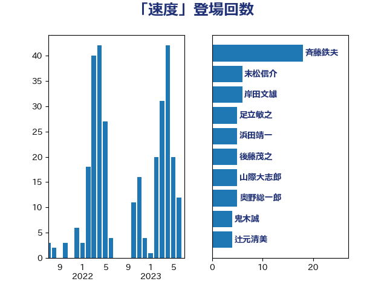

単語「速度」

| 斉藤鉄夫 | 公明党 | 18 回 |
| 末松信介 | 自由民主党 | 6 回 |
| 岸田文雄 | 自由民主党 | 6 回 |
| 足立敏之 | 自由民主党 | 5 回 |
| 浜田靖一 | 自由民主党 | 5 回 |
| 後藤茂之 | 自由民主党 | 5 回 |
| 山際大志郎 | 自由民主党 | 5 回 |
| 奥野総一郎 | 立憲民主党 | 5 回 |
| 鬼木誠 | 立憲民主党 | 4 回 |
| 辻元清美 | 立憲民主党 | 4 回 |
| 田村智子 | 日本共産党 | 4 回 |
| 高橋千鶴子 | 日本共産党 | 3 回 |
| 高木かおり | 日本維新の会 | 3 回 |
| 平木大作 | 公明党 | 3 回 |
| 高橋英明 | 日本維新の会 | 2 回 |
| 青柳仁士 | 日本維新の会 | 2 回 |
| 阿部弘樹 | 日本維新の会 | 2 回 |
| 門山宏哲 | 自由民主党 | 2 回 |
| 角田秀穂 | 公明党 | 2 回 |
| 西田実仁 | 公明党 | 2 回 |
| 緒方林太郎 | 無所属 | 2 回 |
| 福重隆浩 | 公明党 | 2 回 |
| 石破茂 | 自由民主党 | 2 回 |
| 石井苗子 | 日本維新の会 | 2 回 |
| 片山さつき | 自由民主党 | 2 回 |
| 渡辺周 | 立憲民主党 | 2 回 |
| 梅谷守 | 立憲民主党 | 2 回 |
| 東国幹 | 自由民主党 | 2 回 |
| 山崎正恭 | 公明党 | 2 回 |
| 山下芳生 | 日本共産党 | 2 回 |
| 小野泰輔 | 日本維新の会 | 2 回 |
| 塩川鉄也 | 日本共産党 | 2 回 |
| 吉田統彦 | 立憲民主党 | 2 回 |
| 井坂信彦 | 立憲民主党 | 2 回 |
| 中山展宏 | 自由民主党 | 2 回 |
| あべ俊子 | 自由民主党 | 2 回 |
| 齋藤健 | 自由民主党 | 1 回 |
| 鳩山二郎 | 自由民主党 | 1 回 |
| 鰐淵洋子 | 公明党 | 1 回 |
| 高木啓 | 自由民主党 | 1 回 |
| 青島健太 | 日本維新の会 | 1 回 |
| 阿部司 | 日本維新の会 | 1 回 |
| 長妻昭 | 立憲民主党 | 1 回 |
| 鈴木義弘 | 国民民主党 | 1 回 |
| 鈴木俊一 | 自由民主党 | 1 回 |
| 金子恭之 | 自由民主党 | 1 回 |
| 金子俊平 | 自由民主党 | 1 回 |
| 金城泰邦 | 公明党 | 1 回 |
| 野田聖子 | 自由民主党 | 1 回 |
| 進藤金日子 | 自由民主党 | 1 回 |
| 谷公一 | 自由民主党 | 1 回 |
| 西村智奈美 | 立憲民主党 | 1 回 |
| 西村康稔 | 自由民主党 | 1 回 |
| 落合貴之 | 立憲民主党 | 1 回 |
| 萩生田光一 | 自由民主党 | 1 回 |
| 美延映夫 | 日本維新の会 | 1 回 |
| 紙智子 | 日本共産党 | 1 回 |
| 米山隆一 | 立憲民主党 | 1 回 |
| 笠井亮 | 日本共産党 | 1 回 |
| 竹内譲 | 公明党 | 1 回 |
| 福島伸享 | 無所属 | 1 回 |
| 石井正弘 | 自由民主党 | 1 回 |
| 猪瀬直樹 | 日本維新の会 | 1 回 |
| 浜口誠 | 国民民主党 | 1 回 |
| 浅田均 | 日本維新の会 | 1 回 |
| 泉健太 | 立憲民主党 | 1 回 |
| 河野太郎 | 自由民主党 | 1 回 |
| 水岡俊一 | 立憲民主党 | 1 回 |
| 比嘉奈津美 | 自由民主党 | 1 回 |
| 榛葉賀津也 | 国民民主党 | 1 回 |
| 森田俊和 | 立憲民主党 | 1 回 |
| 梅村聡 | 日本維新の会 | 1 回 |
| 柳ヶ瀬裕文 | 日本維新の会 | 1 回 |
| 柚木道義 | 立憲民主党 | 1 回 |
| 林芳正 | 自由民主党 | 1 回 |
| 松山政司 | 自由民主党 | 1 回 |
| 杉尾秀哉 | 立憲民主党 | 1 回 |
| 日下正喜 | 公明党 | 1 回 |
| 新垣邦男 | 立憲民主党 | 1 回 |
| 打越さく良 | 立憲民主党 | 1 回 |
| 志位和夫 | 日本共産党 | 1 回 |
| 平林晃 | 公明党 | 1 回 |
| 市村浩一郎 | 日本維新の会 | 1 回 |
| 岬麻紀 | 日本維新の会 | 1 回 |
| 岩渕友 | 日本共産党 | 1 回 |
| 山添拓 | 日本共産党 | 1 回 |
| 山岸一生 | 立憲民主党 | 1 回 |
| 山口壯 | 自由民主党 | 1 回 |
| 小寺裕雄 | 自由民主党 | 1 回 |
| 寺田静 | 無所属 | 1 回 |
| 宮本周司 | 自由民主党 | 1 回 |
| 奥下剛光 | 日本維新の会 | 1 回 |
| 大塚耕平 | 国民民主党 | 1 回 |
| 城井崇 | 立憲民主党 | 1 回 |
| 土田慎 | 自由民主党 | 1 回 |
| 吉田久美子 | 公明党 | 1 回 |
| 古庄玄知 | 自由民主党 | 1 回 |
| 古屋範子 | 公明党 | 1 回 |
| 勝俣孝明 | 自由民主党 | 1 回 |
| 加藤勝信 | 自由民主党 | 1 回 |
| 住吉寛紀 | 日本維新の会 | 1 回 |
| 伊藤渉 | 公明党 | 1 回 |
| 中谷一馬 | 立憲民主党 | 1 回 |
| 中川郁子 | 自由民主党 | 1 回 |
| こやり隆史 | 自由民主党 | 1 回 |